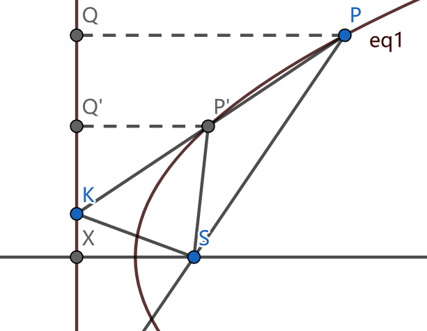
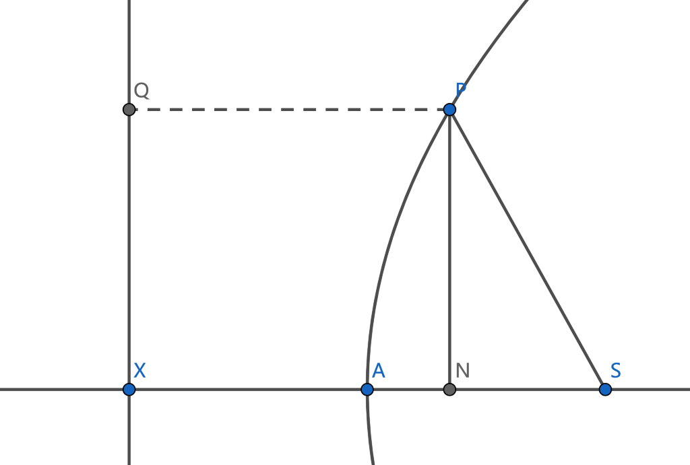
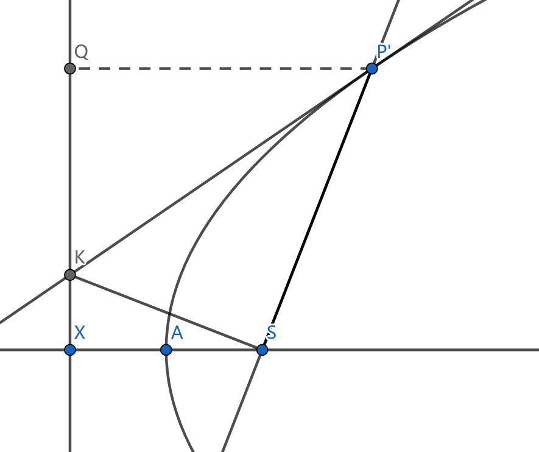

抛物线的的几何性质（1-5）
抛物线定义
给定一条直线L与直线外的一点S，找到一点使得该点与给定直线和与点的距离相等，所有这样的点的集合就是抛物线。给定的直线L称为准线，给定的点S称为焦点。
抛物线的第一条性质指出了抛物线是轴对称图形，并且对称轴是过焦点且垂直准线的一条直线，这条性质这里不予证明。
在下文中，均记抛物线顶点为A，焦点为S，准线与抛物线对称轴交点为X.
性质2
PP’是抛物线上的一条弦，K是PP’延长线与准线的交点，则KS平分∠PSP’的外角

[证明]
图中过P, P’作准线的垂线，Q, Q’为垂足。根据抛物线的定义，有PQ = PS, P’Q’ = P’S.
因为PQ : P’Q’ = PK : P’K = PS : SK
所以根据角平分线定理，有SK平分∠PSP’的外角。
上面的证明用到了角平分线的一个定理，下面做简要介绍及证明：
（拓展）定理1
在ΔABC中，CD为∠C的角平分线，则有CA : CB = DA : DB.
[证明]
图中DE, DE分别为过点D向CA, CB作的垂线。
因为CD是∠C的角平分线，因此有DE = DF。将DE, DF作为ΔACD和ΔBCD的高线，因为高线长度相等，所以ΔACD与ΔBCD面积之比为CA : BC.
而ΔACD与ΔBCD面积之比显然又等于AD : DB，因此有CA : CB = AD : BD.
这个命题的逆命题也是成立的，即若有CA : CB = AD : BD，则CD为∠C的角平分线，因为上面的推导过程完全可逆。
（拓展）定理2
DA为∠C外角的角平分线，研究ΔDAB与ΔDAC的面积比值，可得到AB : AC = DB : DC, 证明方法与上面类似。
命题的逆命题同样也成立，上文抛物线的性质2的证明便是用到了这个逆命题。
性质3

PN垂直于抛物线对称轴，PQ垂直于准线，则有$PN^2=4AS\cdot AN$.
[证明]
所以：$PN^2=XN^2-NS^2=(2AS-NS)^2-NS^2$
整理得：$PN^2=4AS^2-4AS\cdot NS=4AS\cdot AN$
证毕。
当N为AS外侧时，结论仍成立，证明方法类似。
性质4
当N点与S点重合时，即过S作对称轴垂线交抛物线于P，由上面的结论得$PS=2AS$
性质5

过P作抛物线切线，交准线于点K，则有PS⊥KS
[证明]
设抛物线上另有一点P’，根据性质2，KS平分∠PSP’的外角。现在令P‘无限靠近P，则PP’也无限接近于过P点的切线，∠PSP’极限为0，∠PSK极限为$\frac {\pi}{2}$ .
由三角形全等性也易得P为∠SPQ的角平分线